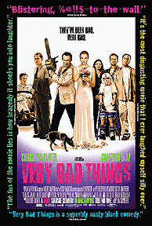
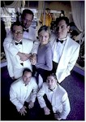

Contents | Features | Reviews | News | Archives | Store |
 |
|
| Movie Credits | Buy It! |
Very Bad Things
Review by Sean Axmaker
Posted 25 November 1998
|  | Written and Directed by Peter Berg Starring
Christian Slater, Cameron Diaz, |
Bodies are meat in Peter Berg’s Very Bad Things. Practically everyone becomes a potential corpse, and unlucky ones wind up sliced, diced, and otherwise dissected into easy to handle pieces. It’s surprising that a film with so much blood and bone contains so little gristle. People do very bad things in Very Bad Things, but in a black comedy it isn’t so much what you do as how you do it, and Berg hasn’t the gallows humor to turn this excursion into bad taste from a sick idea to the despicably funny film it should be.
The premise is your basic urban legend middle class nightmare: five guys let loose in a wild drug and alcohol fueled Las Vegas bachelor party, complete with a sexy stripper who’s willing to do a little business on the side. The Rat Pack they ain’t, but groom-to-be Kyle (Swingers star and scribe Jon Favreau -- fittingly back in ‘Vegas, baby!’) enjoys the madness of his friends around him, a last fling into debauchery with his best buddies before entering the world of matrimonial bliss, but his pals get a little too into it. You know what they say, it’s all fun and games until someone kills a hooker. It’s an accident, sure, but how do you explain that one to the wife, let alone the cops?
Bad boy Boyd (Christian Slater, continuing the channel his devilish Jack Nicholson alter ego) immediately takes control like a twisted self-help guru ("Let me be your success coach," he raves with practiced sincerity), outlining a plan to get the body out of the room and into the ground in the desert. No one knows she’s here, no one’s going to miss her, and what do they need with a criminal record? His terrified pals, too scared to face the music and reveal their deed, numbly go along. But nothing goes quote as planned and soon Boyd has murdered a witness and jumped into plan B, which involves an electric saw, yards of plastic wrap, and plenty of industrial strength cleaner. They get out of Vegas with only two corpses in their wake, but the body count continues to escalates once back in Los Angeles and Boyd rises to the occasion with glee. He’s a born psychopath who seems to have been waiting all his life for this opportunity to strut his homicidal stuff.
In addition to Slater (who also executive produced), Cameron Diaz is on hand as Kyle’s bride Laura, a controlling, passive-aggressive woman who drops the passive hyphenate about halfway through the film. Like Boyd, she’s not about to let morality get in the way of her life, and as her friends die around her like flies in a bug zapper all she can focus on is how this will affect her planned-to-the-second wedding. Diaz is the best thing about the film, turning from screaming harpy to radiant bride to Machiavellian plotter whose ruthlessness puts Boyd to shame with terrifying ease, all in the space of a few minutes.
It takes over half the film to get back to Laura. In the meantime the film has bogged down into a series of screaming matches and near fist-fights between the pals, all suffering through their own private hells of guilt and fear. Daniel Stern’s Adam, a husband and father most troubled by the ordeal (he sees a cop lurking around every corner), turns into a paranoid wreck and focuses much of his wrath at his younger brother Michael (Jeremy Piven, Grosse Pointe Blank), an escalation of their constant bickering that culminates in a fatal run-in. Moore (Leland Orser, Alien Resurrection) remains silent but his tension surfaces in a constant look of constipation on his face. Meanwhile Adam’s sharp wife Lois (Jeanne Tripplehorn, Waterworld) suspects something is going on and starts grilling the boys, but Kyle comes to the rescue with a story that plunges her into depression and Boyd embellishes the tale with the glee of a little kid pulling the wings off of flies.
The big problem is that Berg’s cleverness stops at the plot: the dialogue is simply flat and his direction is flashy but lacks bite. Slater’s rousing speeches are all delivery, twisting his moral bankrupt philosophy into an enticing get of jail free card. But there’s none of that winking, self-effacing verbiage that keeps the movie moving from one violent twist to the other. It’s as if Berg wants to play the film straight while the events leap into absurdity, but it leaves the ideas more interesting than the delivery.
Very Bad Things likely read better as a screenplay than it plays on film because the idea of what’s going on is funnier than the actual execution. In the conclusion Berg finally hits that completely over-the-top bad taste bonanza that the film has been working up to, where everyone -- and I mean everyone -- gets their cosmic justice and Berg finally let’s his sniggering little digs at the handicapped kid blossoms into a truly tasteless foray into gimp humor. But it’s far too late. The presence of Slater and Diaz ultimately do the film almost as much harm as good in one respect: they remind us that the films that made their names (Heathers and There’s Something About Mary, respectively) delivered dark satire better than Peter Berg’s well meaning but wanting effort.
Contents | Features | Reviews | News | Archives | Store
Copyright © 1999 by Nitrate Productions, Inc. All Rights Reserved.